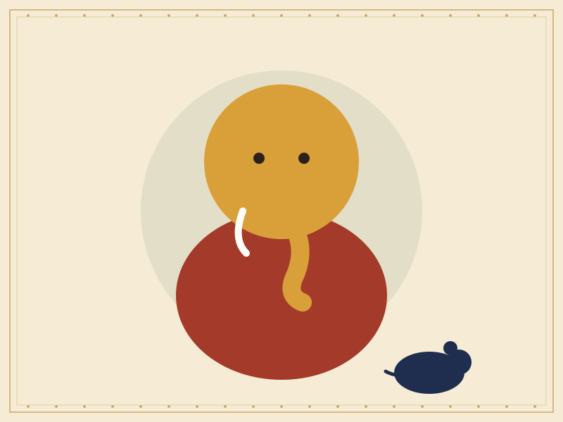

Sample story
Ganesha and the Mooshika
The remover of obstacles and the small creature who became his faithful vehicle.

A proud demon
One telling describes a demon named Gajamukhasura who became arrogant after receiving a boon. He troubled the sages and the people, and no one could stand against him for long.
Ganesha, the elephant-headed son of Parvati and Shiva, came to restore peace. He subdued the demon, but he showed mercy: rather than destroy him, he transformed the demon into a small mouse, the mooshika.
A humble and faithful companion
Though small, the mouse can slip into narrow places. The story reminds visitors that strength is not always measured by size, and that even a defeated foe can find a worthy purpose.
Why it is shown in Golu
Ganesha is often one of the first figures placed on the steps, a traditional blessing for a good beginning to the celebration.